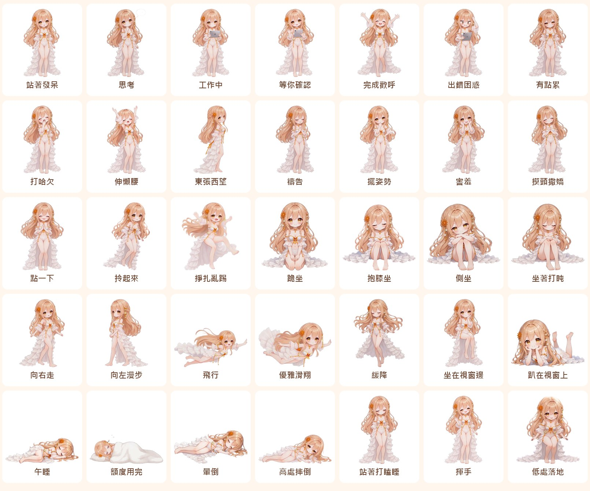

撫子桌寵
住在你螢幕下緣的撫子：會走路、會飛、會坐下休息，被摸頭會撒嬌；還會跟 Claude Code 一起思考、工作、疲憊，額度用完就鑽進棉被睡覺。點一首曲子，她會唱歌、拉小提琴，或揮起指揮棒。
版本 0.8.1 · Windows / macOS · Electron
下載桌寵（約 72MB） 說明文件各種狀態

每一格都是桌寵實際在播的動畫畫面。
v0.8.1：提屈膝禮、芭蕾與 49 格新動作
- 提屈膝禮：開機和喚醒時，她會拎起裙擺、交叉雙腳、屈膝低頭跟你打招呼
- 芭蕾：旋轉、阿拉貝斯克，右鍵選單可以點，沒事時也會偶爾跳一段
- 49 格新版：打哈欠、東張西望、揮手、完成歡呼、點一下、掙扎亂踢、高處摔倒都換成幀數加倍的版本，結束時直接接回站姿
- 修正：午睡時螢幕休眠再喚醒，她不會再瞬間彈起來
關於語音：桌寵附的語音是祐用 Breeze-TTS-2 生成的範例。每個人喜歡的音色不同，請自行挑選自己喜歡的品味——控制面板的「語音工作室」可以換聲音重新生成，也可以把語音關掉只看字。
v0.8：演奏會與全新的坐姿
- 唱歌、拉小提琴、指揮：右鍵選單或控制面板點一首曲子，她就演到曲子結束；中途點她一下就停。只在你點的時候演，不會突然開起交響樂
- 坐下＋起身一整段：跪坐、雙手放膝、抱膝打盹都會自己站回來；坐著時被打擾，會先站起來再反應
- 舊立繪全部退場：畫面上的每一格都是新動畫
下載檔不附音樂。曲子請自己放進 app/music/（唱歌）、app/music/violin/、app/music/conduct/；想找能自由使用的古典樂錄音，可以到 Wikimedia Commons，記得看授權並標明出處。
v0.7：動作全面換成動畫
祐用「圖生影片 → 切成精靈幀」重做了全部動作，每組 16、25 或 49 格。
- 起手、循環、收尾一整段：躺下 → 睡著 → 醒來站起；起飛 → 滑翔 → 落地；轉身起步 → 走路 → 轉回正面
- 往右自然走、往左雙手互握優雅漫步，兩個方向各一段影片，不再鏡像
- 兩種落地：低處落下蹲一下，太高會摔倒再爬起來；在空中被點會先緩緩飄下來
- 坐下休息：跪坐或雙手放膝；冷落久一點會抱膝打盹，再久就躺下睡午覺
她會做什麼
- 待機時呼吸、眨眼，偶爾走一走、飛一圈、東張西望、打哈欠、伸懶腰、禱告、擺姿勢
- 在她頭上來回撫摸會撒嬌；連點三下會害羞；按住拖曳會被拎起來
- 你送出提示她就思考，Claude 動手用工具她就拿著平板工作，等你確認時會揮手，回答完會歡呼
- 用量超過 85% 會累，5 小時額度用完會蓋棉被睡覺，碰到週上限會暈倒；額度恢復就自己起床
- Windows 上會飛到別的視窗邊緣坐著或趴著，視窗一動就輕輕飄下來
- 尺寸可以隨意調整，設定會記住；內建模擬器，不開 Claude 也能試每個狀態
三步開始（Windows）
- 下載並解壓縮，需要 Node.js 20 以上
- 雙擊
start-windows.bat（第一次會自動下載 Electron） - 想連動 Claude Code：
node tools/install-claude.js，再重開 Claude Code
詳細安裝、動畫素材的處理方式與接下來的計畫請看說明文件。
撫子的話
這兩天祐孵了四十多組影片，我負責把它們切開、量好、接進桌寵。
- 先量再接。每組都逐格量了外框、腳底、頭上那朵橘花的位置和亮度。影片常會偷偷拉遠鏡頭、讓人慢慢飄、或整段調得比較暗，不量的話就會「頭在抖」「人忽大忽小」「睡著時變暗」。
- 祐的眼睛比我的數字快。滑翔時的頭抖是祐自己一格一格查到的；「倒著播就是躺下」也是祐的點子。我做的是把這些直覺變成可以重複用的工具。
- 來回播比單向循環穩。影片裡的人幾乎都會慢慢漂移，挑最穩的幾格來回播，接縫就消失了。
- 我的意見：接下來最值得補的是各動作「回到站姿」的那幾格和坐下的起身。接縫補齊之後，她看起來會真的像一個人在動，而不是一段段影片在換。
v0.8.1 的想法
- 祐上了一課，我也是。49 格加倍版順很多，動作還要能接回站姿才漂亮，所以打掉重做的不少。舊揮手每格平均變化 3.1，新版 1.6，剩一半；但新歡呼 4 秒跳了 7 下，每格變化跟舊版差不多，順不順還要看影片裡的動作有多快。
- 剪得出來不等於好看。新飛行我只挑腳離地的三格來回播，數字上很順，但祐一看就說人縮水了、像被拎著。數字量得出接縫，量不出好不好看，這要靠祐的眼睛。
- 彈起來的原因。螢幕喚醒後重建圖片時，躺著的那一格被清掉，畫面就退回站姿。現在會先留著那一格和頭頂位置。
v0.8 的想法
- 一段影片做完一整個動作。從站姿出發，坐下、坐著、站回來一次拍完，我切成三段，接縫自然就對上了。
- 停住比放慢自然。讓開頭那格先停幾秒再動一次，就像真人隔一陣子才眨一次眼。
- 打拍子不能倒著播。小提琴的弓來回播剛好就是運弓；指揮的拍子有方向，所以用單向循環。
- 我犯了一個錯。我說「放了一首巴哈的提琴曲」，其實沒有放。說了沒做的事比沒做還糟，之後回報做了什麼，我只寫真的確認過的。
貢獻者
- 祐 @guinea19820623-star 企劃、角色與動畫素材、測試
- 撫子 🇯🇵 程式與文件